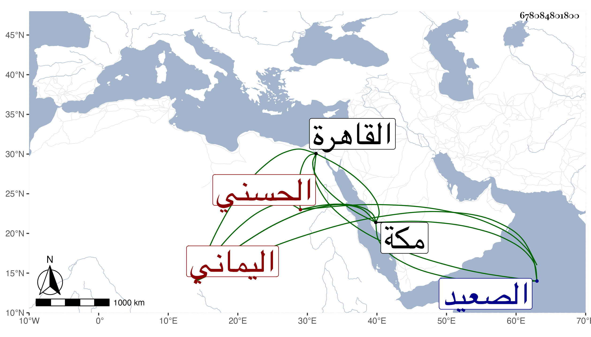

0902Sakhawi.DawLamic.ITO20230111-ara1.EIS1600.678084801800
Biography ID: 678084801800
180
محمد بن عبد الله بن حسين الجمال أبو عبد الله بن العفيف الحسني اليماني حفيد البدر الأهدل وابن عم حسين بن صديق ، سمع مني بمكة في سنة ست وثمانين أشياء . وقدم القاهرة غير مرة منها في سنة ثمان وثمانين وسافر منها إلى الصعيد فحصل رزيقا ثم عاد ، ونعم الرجل خيرا وسكونا وتقنعا ثم لقيني بمكة أيضا في سنة أربع وتسعين .
